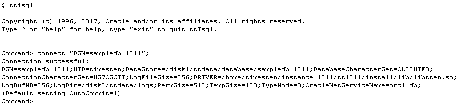
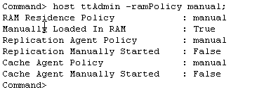

This tutorial provides a step-by-step guide on how to set up and create a TimesTen database. You need to be the user that created TimesTen Instance to create a database. This user is known as the instance administrator.
1. Setting up a Data Source Name (DSN)
TimesTen databases are accessed through Data Source Names(DSNs). A DSN is a logical name that identifies a TimesTen database. Each DSN contains attributes that specify the properties of the database being created or accessed.
On Linux and UNIX systems, system DSNs are defined in the <instance_dir>/conf/sys.odbc.ini file. This file is referred to as the system ODBC.INI file.
2. Creating a TimesTen Database
A TimesTen database is simply created by connecting to it. A first connection to an already-existing database results in loading the database in memory. Database objects can be created once a connection has been established to the database. Only the instance administrator can create a TimesTen database.
As an example, let us use ttIsql to create and connect to the database sampledb.
The main TimesTen daemon process must be running before you can create a database. Only the instance administrator is authorized to start the daemon. The utility ttDaemonAdmin is used to start the daemon. Enter the following command on the OS command line to start the daemon, if it has not yet been started:
ttdaemonadmin -start
orttdaemonadmin -start -force
Note: ttdaemonadmin and other TimesTen database utilities are located in the <instance_dir>/bin directory. To make these utilities readily available, include the bin directory in the PATH environment variable, or run the ttenv.* script to set up your TimesTen environment. Refer to the section "Environment variables" in the Oracle TimesTen In-Memory Database Installation Guide for more information.
Enter ttisql at the OS command prompt to launch ttIsql.
ttisql
Enter the following command at the ttIsql command prompt to connect to the database.
connect "dsn=sampledb";
When the command returns, the sampledb database has been created and loaded into memory.

Enter the following command to change the RamPolicy from the default InUse to Manual.
host ttAdmin -ramPolicy manual;

For more information, please refer to RAM Policy Setting section.